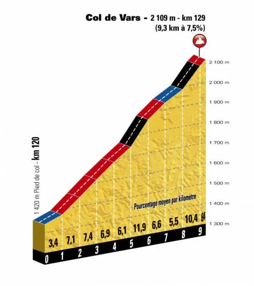
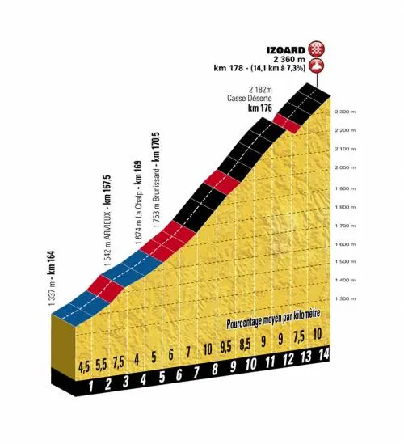

Squadra Molteni kører legendarisk Tour de France-etape

Squadra Molteni sender til sommer 4 ryttere til de franske alper, for at køre l’Etape Du tour 2017, som er en legendarisk Tour de France-etape. 178 km fra Briançon – Izoard, over 2 bjergpas i det historiske terræn, hvor Eddy Merckx for 45 år siden definitivt slukkede Louis Ocanas 1972-tourdrømme.
Ocania mod Merckx
1972-Touren var året, hvor Ocania skulle vise, at han kunne slå Merckx. Året før var Ocania, iført den gule føretrøje, styrtet på en etape i Pyrenæerne, og måtte udgå. I respekt for Ocania, nægtede Merckx dagen efter at overtage den gule føretrøje, men vandt 1971 Touren.
Ocania havde hele foråret 1972 proklamerede, at han ville slå Merckx i 1972-udgaven af Tour de France. Han havde vundet Critérium du Dauphiné Libéré og det spanske mesterskab og var klar til duellen mod Merckx, fortæller Squadra Moltenis løjtnant Kasper Sørensen, der har været en tur i arkiverne.
16. juli 1972, 13. etape
Merckx beordrer tidligt Molteniholdet til at lægge pres på. Allerede på Col de Vars sender Merckx Huysmans, De Schoenmaecker og Bruyère i front. De trækker feltet i stumper og stykker. Peugeots Raymond Delisle er dog dumdristig nok til at stikke halvvejs oppe. Han er første mand på toppen af Col de Vars. Agostinho prøver lykken kort før toppen, men Merckx sætte efter – og de to runder toppen som 2’er og 3’er. Ocana har intet at byde ind med. Han er nærmest gået i stå, og krydser toppen hele 20 sekunder efter i en mindre grupppe.
På nedkørslen er Merckx suveræn. Men Guimard kører sit livs nedkørsel og får kontakt med Merckx. De to indleder et godt samarbejde i dalen på vej frem mod det sidste bjerg: Col de Izoard. Ved foden af Izoard har Merckx og Guimard godt halvanden minuts forspring til nærmeste gruppe bestående af 9 ryttere: Zoetemelk, Van Impe, Poulidor, Martinez, Hézard Agostinho, Gimondi, Ocana og Moltenis Van Den Bossche.
Merckx og Guimard følges op af Izoard indtil 4 km fra toppen. Her sætter Merckx tempoet op – og Guimard må opgive at følge med. Merckx krydsede toppen af Col de Izoard med over 1 minut ned til Guimard, der har fået følgeskab af Gimondi, Poulidor og Van Impe.
På den over 20 km lange nedkørsel mod Briancon kører Merckx igen vanvittigt hurtigt. Han slutter som sikker vinder med 1,31 ned til forfølgergruppen Gimondi, Guimard, Van Impe og Poulidor. Ocania mistede over 5 minutter til Merckx – og han udgik af Tour de France to dage efter.
L’Etape du Tour 2017 – 16. juli
Fire dage før Tour de France 2017 rammer 18. etape, afholdes det kæmpestore motionscykelløb L’Etape du Tour 2017. Løbet køres hvert år på en særlig udvalgt Tour de France etape. Der køres altid på nøjagtigt samme rute som tourfeltet kører. Med servicemotorcykler, gendarmeri og på helt lukkede veje.
Sommerens L’Etape du Tour er præcist 45 år siden Merckx slukkede Ocanas tourdrømme. Det markerer vi ved at sende et stærkt hold til start den 16. juli, og vi er selvfølgelig storfavoritter til at vinde L’Etape du Tour 2017 for stålcykelhold, fortæller holdkaptajn Niels Bjørnsteen.
Squadra Moltenis Kasper Sørensen, Grane Maaløe, Jens Bojesen og Niels Bjørnsteen står klar ved startstregen med deres orange stålcykler til sommer i Briancon. Klar til at tage kampen op mod de 178 bjergrige kilometre – og ikke mindst Col de Vars og Col d’Izoard.


